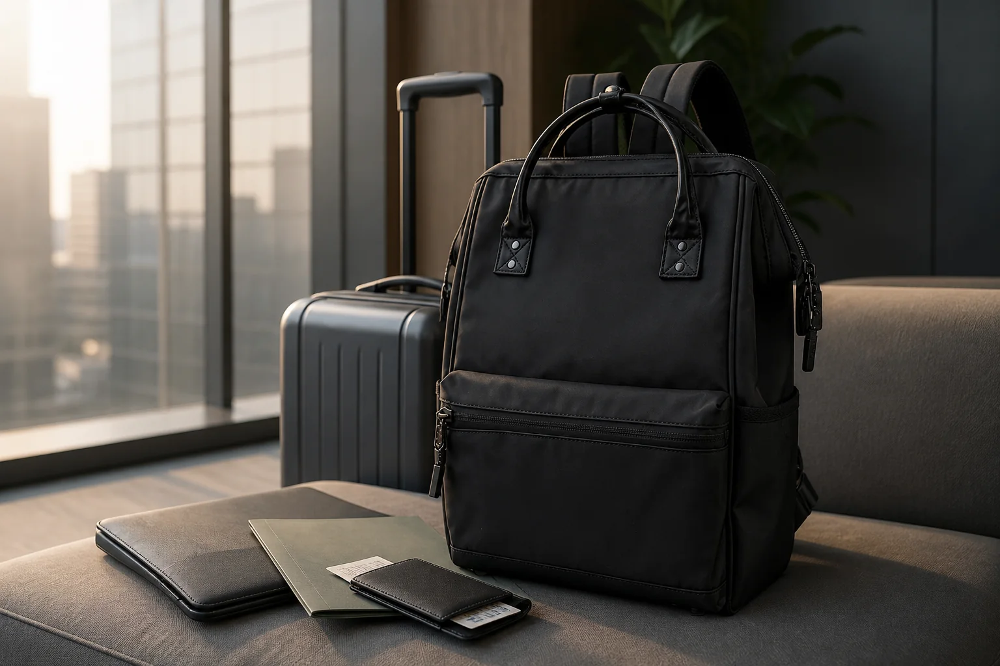

출근 가방에 하루의 숙박 짐을 더할 때

평일에는 노트북과 서류를 담고, 출장 날에는 옷과 세면도구까지 더하는 가방을 찾을 때가 있습니다. 한 가방으로 이어가면 짐을 옮길 일이 줄지만 매일 쓰지 않는 물건까지 계속 들게 될 수도 있습니다. 겸용 백팩을 검토하려면 평일의 기본 짐과 출장에서 추가되는 짐을 따로 펼쳐보는 것이 먼저입니다. 출장 짐이 담긴 상태뿐 아니라 평소 출근에서 어떤 부피로 쓰게 되는지도 함께 봐야 합니다.
업무 물건에는 두 일정에서 공통으로 쓰는 것이 많습니다. 같은 기기와 충전 도구, 파일을 쓴다면 그 묶음을 먼저 기준으로 삼을 수 있습니다. 반면 출장에만 가져갈 물건은 일정과 숙소 안내를 보고 고릅니다. 일박이라는 이름만으로 필요한 옷과 개인 물건의 양이 같지는 않습니다. 도착 직후 업무를 볼지, 숙소에 먼저 갈지에 따라서도 가방을 여는 순서가 달라집니다. 가져갈 목록 옆에 사용하는 시점을 적으면 공통과 추가의 구분이 더 분명해집니다.
추가 짐을 담은 뒤 남아야 할 동작
노트북과 파일을 먼저 넣고 나머지가 들어갈 여유를 보는 방식이 있습니다. 다만 여유가 전체 부피의 숫자로만 남는 것은 아닙니다. 납작한 면이 필요한 서류 옆에 두꺼운 파우치가 들어오면 서로 닿는 위치가 달라집니다. 기기를 꺼내려면 옷을 먼저 빼야 하는지도 확인하세요. 업무가 시작되는 순간 여행 물건까지 책상 위에 펼치게 된다면 겸용으로 쓰는 동작이 번거로울 수 있습니다.
예를 들어 도착한 역에서 곧바로 회의 장소로 가는 일정을 가정해봅니다. 회의에서 쓸 파일과 필기구는 먼저 꺼낼 묶음이고, 숙소에서 사용할 옷은 그때까지 닫아둘 묶음입니다. 출발할 때 옷이 입구를 차지하게 넣으면 회의 자료를 찾을 때 자리를 바꿔야 합니다. 이 경우 여행 파우치를 한쪽에 두고 업무 묶음을 따로 찾을 수 있는지 실제로 담아보며 확인할 수 있습니다. 모든 출장에서 같은 순서로 쓰라는 뜻은 아닙니다.
Himawari No.1884 제품 정보의 외부 크기는 가로 30 × 세로 45 × 폭 20cm입니다. 겸용 백팩 후보를 비교할 때는 이 겉 크기와 함께 평소 쓰는 기기, 케이스, 파일의 실제 외형을 봅니다. 내부 공간과 입구를 통과하는 조건은 따로 확인해야 합니다. 출장에서 추가할 묶음까지 담은 뒤 여밈을 자연스럽게 닫을 수 있는지, 업무 자료를 다시 꺼내는 동작이 가능한지를 기준으로 검토하면 됩니다.

출장용 파우치는 기능별로 끝없이 나누기보다 도착해서 사용하는 범위로 만들 수 있습니다. 숙소에서만 꺼낼 개인 물건을 한 묶음으로 두면 이동 중 필요한 자료와 섞이지 않습니다. 작은 물건이 많아 파우치가 두꺼워졌다면 실제로 쓰는지 다시 볼 이유가 있습니다. 가방 안의 빈자리를 채우는 것을 목표로 두지 않고 일정에서 사용해야 할 물건만 남기면, 평일과 출장 사이에 바꾸는 범위도 줄어듭니다.
걷는 가방과 캐리어 위의 가방
캐리어와 함께 이동할 계획이라면 백팩을 어디에 둘지도 생각합니다. 제품에 안내된 결합 방식이 있는 경우 실제 손잡이와 맞는지 확인하고, 그렇지 않다면 직접 메거나 손에 드는 방식으로 계획합니다. 가방이 캐리어 위에 올라간다는 이유만으로 안정적으로 고정되는 것은 아닙니다. 손잡이를 잡고 움직일 때 가방과 끈이 어디에 놓이는지 봐야 합니다. 계단이나 환승에서는 두 짐을 각각 어떻게 들고 이동할지도 필요합니다.
캐리어 없이 이동한다면 출발할 때의 실제 짐을 담고 짧게 메어볼 수 있습니다. 서류와 기기, 개인 파우치를 모두 담았을 때 한쪽으로 기울거나 필요한 물건이 찾기 어려워지는지 봅니다. 가방이 부풀어 평소 출근복의 옷깃과 닿는 면이 달라질 수도 있으므로 실제 옷차림으로 확인할 만합니다. 편한 조건은 개인의 짐과 이동 방식에 따라 달라지며 모델 이름만으로 정해지지 않습니다.
이동 중 사용할 표와 연락 도구는 업무 자료와 또 다른 시점에 필요합니다. 열차나 대기 공간에서 잠시 꺼낼 물건을 정한 위치에 두고 사용 뒤 바로 돌려놓을 수 있게 준비합니다. 회사에서만 쓸 출입 수단과 여행 중 계속 쓸 확인 자료를 한 묶음에 모았다면 그때마다 어떤 것을 꺼낼지 구분할 수 있어야 합니다. 자주 찾는 물건을 가방 밖에 드러내기보다 위치를 기억할 수 있는 닫힌 곳에 두면 됩니다.
평일로 돌아오는 정리
출장을 마친 뒤 여행용 묶음을 먼저 꺼내면 출근 가방으로 돌아가는 범위가 분명해집니다. 사용한 옷과 개인 용기는 각 물건의 관리 안내에 따라 정리하고, 업무 도구는 평소 자리로 돌려놓습니다. 숙소나 이동에서 받은 종이가 늘었다면 계속 보관할 자료와 당일 안내를 나눕니다. 여행이 끝났다는 이유로 같은 가방을 바로 다음날 메면 추가 짐이 그대로 남을 수 있으므로, 무엇을 빼야 할지부터 확인하는 방식입니다.
반복되는 출장이 있다면 공통 묶음만 유지할 수 있습니다. 기기와 충전 도구를 늘 한 곳에서 쓰더라도 옷과 자료의 양은 출장마다 달라질 수 있습니다. 지난번에 여유가 있었다는 기억 대신 이번 일정의 추가 짐을 다시 대조하세요. 여행 파우치를 꺼냈을 때 평일에 쓰지 않을 것이 남아 있지 않은지 보면 겸용 가방의 전환이 끝납니다. 출장용 목록에는 실제로 꺼내기 어려웠던 물건을 구체적으로 남겨둘 수 있습니다.
한 가방으로 가능한지 판단이 애매하다면 가장 짐이 많은 출장 하루와 평일 하루를 각각 구성해봅니다. 출장에서 여밈을 무리하게 닫아야 하거나 평일에는 내용물이 계속 움직인다면 다른 운반 구성을 검토할 수 있습니다. 백팩에는 업무 묶음을 남기고 개인 여행 짐을 별도로 운반하는 방식도 선택지입니다. 가방 하나라는 목표보다 두 일정에서 자료를 찾고 이동하는 동작이 이어지는지를 보면 결정할 조건이 구체적으로 보입니다.